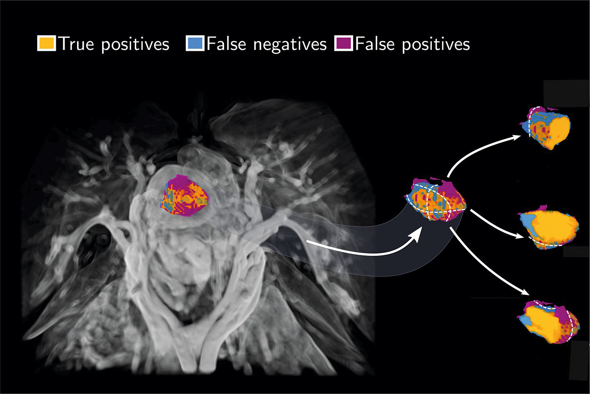
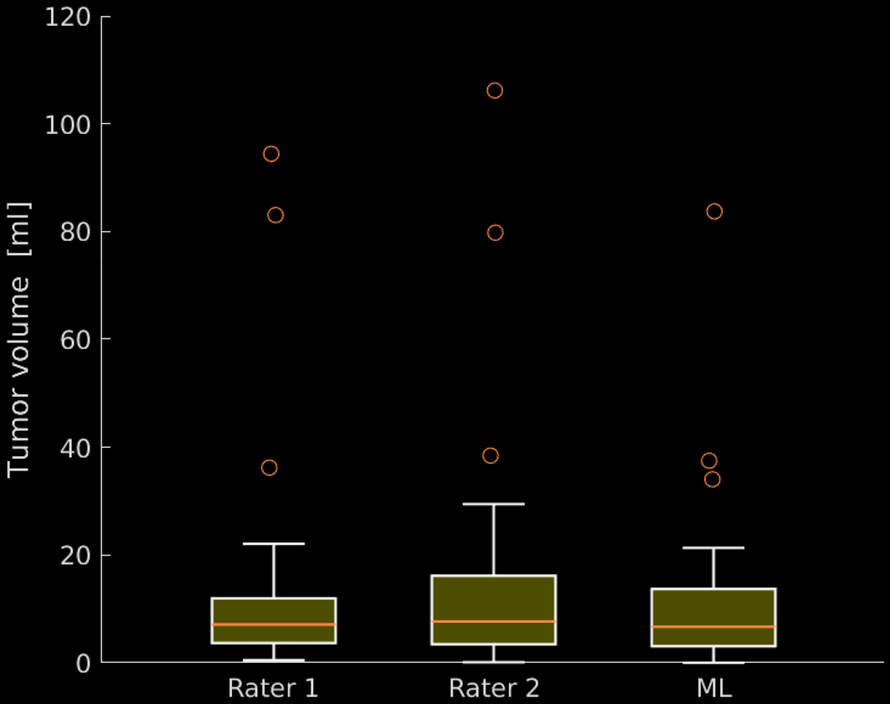

AUTOMATED SEGMENTATION OF ENDOMETRIAL CANCER ON MR IMAGES USING DEEP LEARNING
Erlend Hodneland, Julie A. Dybvik, Kari S. Wagner-Larsen, Veronika Šoltészová, Antonella Z. Munthe-Kaas2,4, Kristine E. Fasmer, Camilla Krakstad, Arvid Lundervold, Alexander S. Lundervold, Øyvind Salvesen, Bradley J. Erickson & Ingfrid Haldorsen
done

Endometrial cancer is the most common gynecologic cancer in industrialized countries
Patients present with early-stage disease are cured by surgery
Preoperative imaging findings guide the surgical approach
This is the result of an MR scan of the brain as example, because our endometrial data is confidential.
Source: data
Source: data
In the middle you can see the the tumor.
In order to perform advanced imaging analysis the region of the tumor within the endometrium needs to be marked by experts.
Now we show you a slice representation of the data.
The experts have to mark the tumor on every slice to end up with a complete segmentation
This is a very labour intensive process
This is why the solution presented by Hodneland et al. is so very much needed!

Hodneland et al. use a convolutional neural network for automatic tumor segmentation
Image Source: https://becominghuman.ai
34 patients where referred as the test data set and a tutal number of 105 patients was used for training the model
This is a visualization of their results!
Orange: true positives (ML and expert mark as tumor)
Blue: false negative (ML does not mark as tumor, expert does)
Purple: False positives (ML marks as tumor, expert does not)
Blue: false negative (ML does not mark as tumor, expert does)
Purple: False positives (ML marks as tumor, expert does not)
The difference between the manual and automated ML segmentation of the primary tumor is shown

The result out of the paper showing the endometrium in the background.

The Boxplot presents the tumor volume measurements of rater 1, rater 2, and of the machine learning algorithm result.
No difference in median tumor volume
The network was able to provide a segmentation mask with human agreement not different from inter-rater agreement of human experts!

The work from Hodneland et al. is one step further in the direction of personalized treatment for every patient in need!
For more information check out the
Scientific Reports Paper!
Scientific Reports Paper!